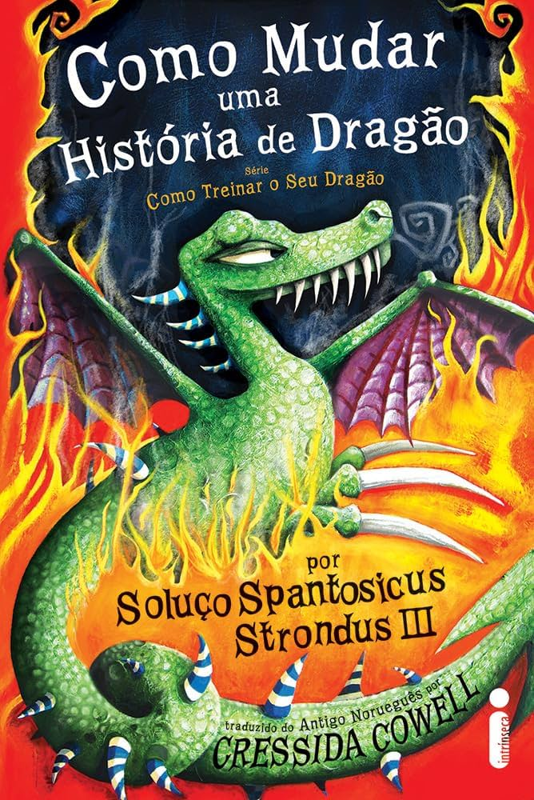
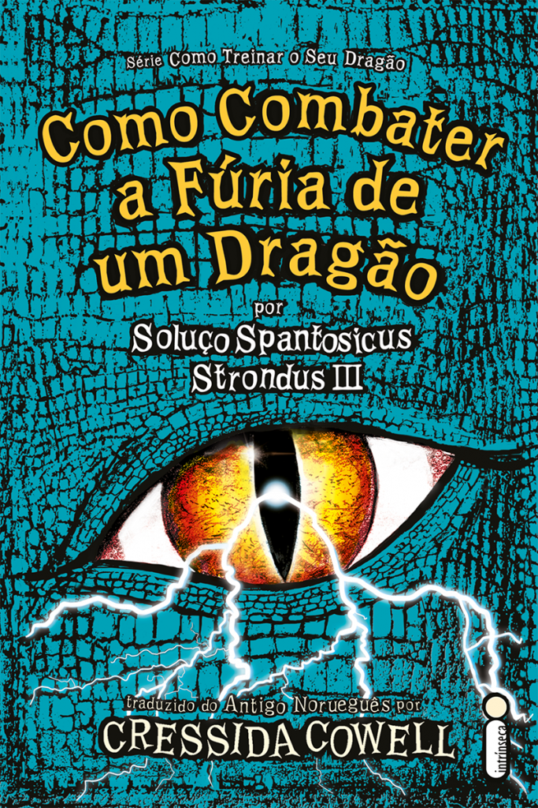
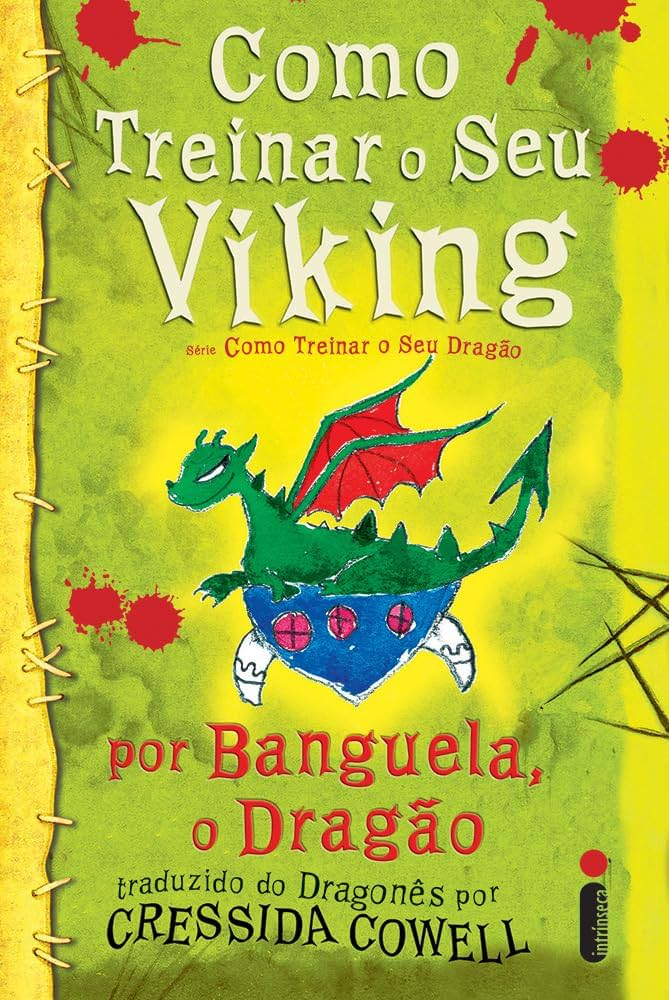
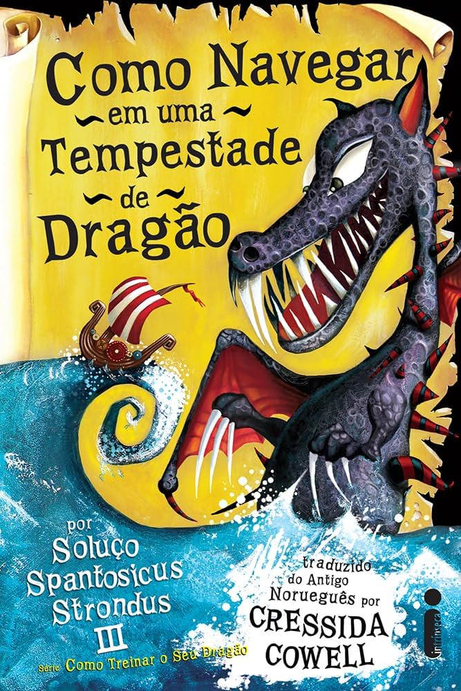

Como Treinar o Seu Dragão
"Como Treinar o Seu Dragão" conta a história de Hiccup,
um jovem viking que precisa capturar e treinar um dragão para se tornar um verdadeiro viking.
Ele encontra Banguela, um dragão pequeno e inteligente, e juntos enfrentam desafios.
A história mistura comédia e aventura, destacando temas como amizade, coragem e o valor da inteligência em vez da força física. A relação entre Hiccup e Banguela é central, mostrando como a amizade pode superar obstáculos.

Como Trair o Herói de um Dragão
Soluço Spantosicus Strondus III foi o mais grandioso Herói já visto em todo o território Viking. Notável esgrimista e encantador de dragões, ele era corajoso, impetuoso e muitíssimo inteligente. Mas até mesmo os grandes heróis podem ter dificuldades no começo, principalmente se têm como companheiro um dragãozinho teimoso e mal-educado…
Soluço precisa ser coroado Rei do Oeste Mais Selvagem. Será que ele vai se livrar dos Dragões-espiões Vampiros da bruxa e conseguir as Coisas Perdidas do Rei antes do Juízo Final de Yule? E há mesmo um traidor no acampamento de Soluço que, no fim, trairá todos?
Como Mudar a História de um Dragão
Em Como mudar uma história de dragão, o quinto episódio da série Como treinar o seu dragão, o desajeitado Soluço Spantosicus Strondus III e seus amigos Perna-de-peixe e Camicazi e os dragões Banguela e Caminhante do Vento, partem para uma das aventuras mais difíceis de suas vidas: a Missão para Impedir o Vulcão de Entrar em Erupção.

Como combater a fúria de um dragão
Como combater a fúria de um dragão começa no Dia do Juízo Final de Yule. Alvin, o Traiçoeiro, está prestes a ser coroado Rei do Oeste Mais Selvagem na ilha do Amanhã, e ele planeja começar seu reinado de terror com a extinção de todos os dragões. Para impedir esse acontecimento trágico, Soluço precisa provar que é o verdadeiro Rei, ser coroado no lugar de Alvin, enfrentar o dragão Furioso e salvar os Vikings e os dragões. Tudo seria um pouco mais fácil se nosso Herói não tivesse perdido a memória e conseguisse lembrar quem ele é…

Como treinar o seu viking
"Como Treinar o Seu Viking" conta a história de Soluço e Banguela,
que precisam vencer os arquirrivais Malvado Melequento,
Bafoca de Maluquício e a dragoa Lagarta de Fogo. Para isso,
eles participam da Competição de Caça, organizada pelo treinador Bocão Bonarroto.

Como Navegar em uma Tempestade de Dragão
Em sua sétima aventura, Soluço terá exatos três meses, cinco dias e seis horas para descobrir a América, encontrar o caminho de volta a Berk, salvar o pai, derrotar as Serpentes-polares e ainda vencer a Competição Amistosa de Nado Intertribal. Será que ele vai conseguir? O relógio está correndo.
